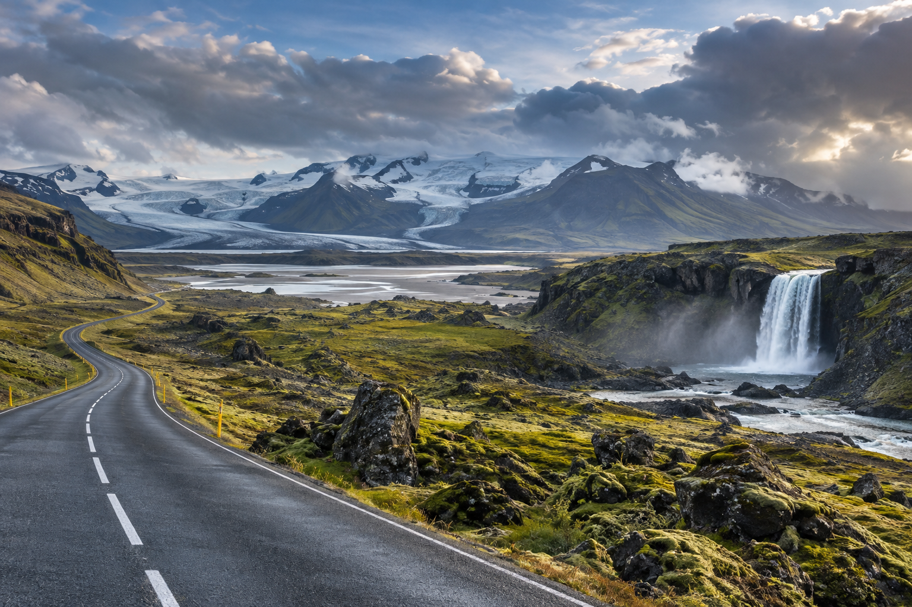
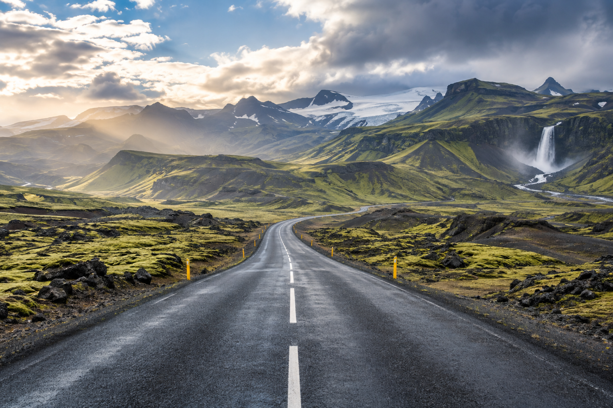
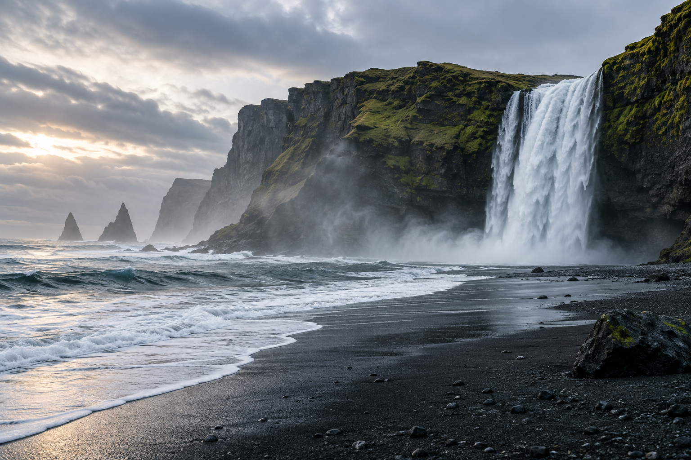

Iceland Travel Guide for First-Time Visitors
Iceland can look simple on a map, but planning a first trip takes more thought than choosing a few waterfalls and booking a rental car. Weather can change quickly, driving distances can feel longer than expected, and the best route depends heavily on the season and the number of full days you actually have.
For most first-time visitors, the biggest decision is not which attraction to see first. It is deciding how much of Iceland you can realistically cover. A short trip should normally focus on Reykjavík, the Golden Circle, and part of the South Coast. Longer trips can move farther east, north, and eventually around the Ring Road.
This guide gives you the broad picture before you build the details. It covers trip length, Iceland's main regions, Reykjavík, the Golden Circle, South Coast, Ring Road, transport choices, seasons, accommodation, food, safety, and the main decisions every first-time visitor should make.
Iceland at a Glance

| Planning Question | Good Starting Point |
|---|---|
| Best trip length for many first visits | 5–10 full days |
| Best for a short trip | Reykjavík + Golden Circle + South Coast |
| Best for a longer road trip | Ring Road |
| Main international airport | Keflavík International Airport |
| Best-known scenic route | Golden Circle |
| Main road around Iceland | Route 1 / Ring Road |
| Best way to explore rural Iceland | Rental car for many travelers |
| Best for travelers who do not want to drive | Reykjavík + organized tours |
| Best season for long daylight | Summer |
| Best season for Northern Lights | Darker months |
| Biggest planning issue | Weather, road conditions, and realistic driving time |
| Emergency number | 112 |
Is Iceland Good for First-Time International Travelers?
Yes, but it rewards preparation.
Iceland is relatively easy to understand geographically, English is widely used in the tourism industry, and many major attractions have established visitor facilities.
The challenge is different.
You need to respect:
- ✓Weather
- ✓Wind
- ✓Road conditions
- ✓Driving distances
- ✓Ocean safety
- ✓Seasonal daylight
- ✓Remote areas
Iceland is not difficult because the route is complicated.
It can become difficult when travelers assume nature will follow their schedule.
What Makes Iceland Different from a Normal City Trip?
In cities such as Tokyo or Lisbon, a delayed train or closed attraction may change one part of the day.
In Iceland, weather can affect:
- ✓An entire driving route
- ✓A mountain road
- ✓Glacier activity
- ✓A boat tour
- ✓Visibility
- ✓Hiking
- ✓Your arrival at the next hotel
That means a good Iceland itinerary needs more flexibility.
A road trip should not be planned down to every 15-minute block.
How Many Days Do You Need in Iceland?
For many first-time travelers, 5–10 full days is a strong range.
The correct number depends on how much of the country you want to see.
3 Days
A short Iceland trip should stay focused.
Think:
- ✓Reykjavík
- ✓Golden Circle
- ✓Selected South Coast highlights
Do not attempt the full Ring Road.
5 Days
Five days gives you enough time for a more meaningful southern Iceland trip.
You may combine:
- ✓Reykjavík
- ✓Golden Circle
- ✓South Coast
- ✓Vík
- ✓Selected glacier-region stops
The route still needs to stay compact.
7 Days
A week allows more breathing room.
You can spend more time across the south and southwest rather than simply rushing between famous stops.
A seven-day first trip does not automatically need to become a Ring Road trip.
10 Days
Ten full days makes a first Ring Road trip far more realistic.
You can begin considering:
- ✓South Coast
- ✓Southeast
- ✓East Iceland
- ✓North Iceland
- ✓Mývatn
- ✓Akureyri
- ✓Western Iceland
without making every day a very long driving day.
14 Days or More
Two weeks gives you much more flexibility.
You can:
- ✓Slow down
- ✓Add regional detours
- ✓Build in weather buffers
- ✓Spend more time hiking or exploring smaller towns
The later How Many Days Do You Need in Iceland? guide will compare these trip lengths in detail.
Count Full Sightseeing Days Correctly
This is important.
If your flight lands at 4 PM, that is not a full Iceland sightseeing day.
If you fly home at 9 AM, departure day is not a full day either.
For example:
Seven Hotel Nights
may give you only:
six usable sightseeing days
depending on flight times.
Always build the route from your actual available hours.
Understanding Iceland's Main Regions

Iceland is commonly divided into seven broad regions:
- ✓Reykjavík Capital Area
- ✓South Iceland
- ✓Reykjanes Peninsula
- ✓West Iceland
- ✓Westfjords
- ✓North Iceland
- ✓East Iceland
Each has a different role in trip planning.
For a first visit, you do not need to cover all seven.
In fact, trying to do so on a short trip is one of the easiest ways to create an exhausting itinerary.
Reykjavík: The Natural Starting Point
Reykjavík is Iceland's capital and the main urban base for most visitors.
It is compact compared with many European capitals, but it is worth treating as more than a place to sleep before a road trip.
The city offers:
- ✓Hallgrímskirkja
- ✓Harpa
- ✓Old Harbour
- ✓Museums
- ✓Geothermal swimming pools
- ✓Restaurants
- ✓Cafes
- ✓Nightlife
- ✓Easy tour departures
How Much Time Should First-Time Visitors Give Reykjavík?
For many trips:
one full day or a combination of arrival/departure periods
is enough for a first overview.
Spend more time if you are interested in:
- ✓Museums
- ✓Food
- ✓Nightlife
- ✓City culture
- ✓Pools
- ✓A slower start or end to the trip
Do not automatically spend three days in Reykjavík if the main purpose of your trip is Iceland's landscapes.
Should You Stay in Reykjavík the Whole Trip?
It can work for a short trip.
From Reykjavík, you can join organized tours to areas such as:
- ✓Golden Circle
- ✓South Coast
- ✓Reykjanes
This is useful if you:
- ✓Do not want to drive
- ✓Visit in difficult winter conditions
- ✓Prefer guided day trips
For a longer road trip, staying in Reykjavík every night creates unnecessary backtracking.
The later Reykjavík Travel Guide for First-Time Visitors will cover the capital in detail.
Reykjanes Peninsula
Many travelers first see Iceland on the Reykjanes Peninsula because Keflavík International Airport is located there.
The peninsula has:
- ✓Volcanic landscapes
- ✓Geothermal areas
- ✓Coastline
- ✓Lava fields
- ✓Geothermal bathing experiences
It can work well on:
- ✓Arrival day
- ✓Departure day
- ✓A short Iceland stopover
However, current volcanic and access conditions in parts of Reykjanes can change.
Always check official travel and safety information close to your visit rather than relying on an old itinerary.
Golden Circle: The Classic First-Day Route
The Golden Circle is Iceland's most famous sightseeing route.
The three core attractions are:
- ✓Þingvellir National Park
- ✓Geysir geothermal area
- ✓Gullfoss waterfall
These stops combine:
- ✓Geology
- ✓History
- ✓Geothermal activity
- ✓Waterfalls
The route is popular because it fits easily into a day from Reykjavík.
Is the Golden Circle Worth It?
For most first-time visitors:
yes.
It provides an efficient introduction to several landscapes without requiring a long road trip.
But popularity also means:
- ✓Tour buses
- ✓Busy parking areas
- ✓Crowds at key stops
Starting earlier or traveling outside the busiest periods can improve the experience.
Golden Circle Self-Drive or Tour?
Both work well.
Self-Drive
Better if you want:
- ✓Flexible stops
- ✓Photography
- ✓Your own pace
- ✓Additional detours
Organized Tour
Better if you:
- ✓Do not want to drive
- ✓Travel in winter
- ✓Prefer a guide
- ✓Stay in Reykjavík
The later Golden Circle Iceland: Complete First-Time Visitor Guide will own the detailed route.
South Coast: One of the Strongest First-Time Regions

If you have more than a very short stay, the South Coast should be high on your list.
This region contains some of Iceland's most recognizable landscapes.
Common first-time stops include:
- ✓Seljalandsfoss
- ✓Skógafoss
- ✓Reynisfjara
- ✓Vík
- ✓Glaciers
- ✓Jökulsárlón
- ✓Diamond Beach
The landscape changes constantly as you move east.
You may see:
- ✓Waterfalls
- ✓Black sand
- ✓Cliffs
- ✓Glaciers
- ✓Lava fields
- ✓Mountain scenery
Can You See the South Coast in One Day?
Part of it.
A Reykjavík day trip can cover major western South Coast stops.
But trying to reach far southeast locations and return to Reykjavík in the same day can create a very long schedule.
For a better experience, longer trips should stay overnight along the route.
Vík as a Useful Stop
Vík is one of the most useful small-town stops for travelers exploring the South Coast.
It can work as:
- ✓Lunch stop
- ✓Overnight base
- ✓Fuel stop
- ✓Break between western and eastern South Coast sections
The town's location makes it practical even though it is small.
Jökulsárlón Requires More Time
Jökulsárlón Glacier Lagoon lies much farther east.
Do not look at a list of South Coast attractions and assume they all fit comfortably into one Reykjavík day trip.
This is where realistic distance planning becomes important.
The later Iceland South Coast Guide: Waterfalls, Beaches and Glacier Stops will cover this region in detail.
Reynisfjara and Ocean Safety
Iceland's natural attractions should never be treated like controlled theme-park environments.
At beaches such as Reynisfjara, powerful waves can reach farther up the shore than visitors expect.
Never turn your back on the ocean or move closer to dangerous water just for a photograph.
Follow:
- ✓Local signs
- ✓Barriers
- ✓Current warnings
- ✓Official safety instructions
If conditions look dangerous, the correct decision is to move back.
West Iceland
West Iceland can be a good extension when you have more time.
The region includes:
- ✓Fjords
- ✓Waterfalls
- ✓Historic sites
- ✓Lava landscapes
- ✓Snæfellsnes Peninsula access
The Snæfellsnes Peninsula is especially popular because it packs several landscape types into a relatively compact area.
But for a first trip under one week, I would not automatically add it if doing so makes the South Coast rushed.
North Iceland
North Iceland becomes more realistic on longer trips.
Major bases and areas include:
- ✓Akureyri
- ✓Mývatn
- ✓Húsavík
- ✓Goðafoss
- ✓Northern geothermal landscapes
Akureyri
Akureyri is the main urban center in northern Iceland.
It can serve as a useful stop for:
- ✓Accommodation
- ✓Restaurants
- ✓Fuel
- ✓North Iceland sightseeing
Mývatn
The Mývatn area is known for:
- ✓Geothermal landscapes
- ✓Volcanic formations
- ✓Lake scenery
- ✓Nearby attractions
This region adds a very different feel from the South Coast.
For many first-time travelers, it belongs naturally in a Ring Road itinerary rather than a short Reykjavík-based trip.
East Iceland
East Iceland is an important part of the Ring Road experience.
Expect:
- ✓Fjords
- ✓Small towns
- ✓Mountains
- ✓Longer driving sections
- ✓Quieter landscapes
Travelers rushing the Ring Road sometimes treat eastern Iceland as a transit zone.
That is a mistake.
If you choose the full Ring Road, give the east enough time to be more than a long drive between the southeast and north.
The Westfjords
The Westfjords are spectacular but generally not part of a basic first-time Iceland route.
They require more time because:
- ✓Distances are long
- ✓Roads can be slower
- ✓Geography creates longer travel times
- ✓Seasonal conditions matter
For a short or normal-length first trip, focus elsewhere.
Add the Westfjords when:
- ✓You have more days
- ✓You prefer remote travel
- ✓Your itinerary is intentionally slower
What Is the Ring Road?
Route 1, commonly called the Ring Road, circles much of Iceland.
It connects many major regions and is the backbone of the classic Iceland road trip.
The route itself is roughly:
1,300 km
but your actual trip will be much longer once you add:
- ✓Attractions
- ✓Hotels
- ✓Detours
- ✓Fuel stops
- ✓Food
- ✓Scenic roads
How Many Days Do You Need for the Ring Road?
For a first-time visitor, I would not recommend trying to complete it in only a few days.
Around:
10 days
is a much more comfortable starting point for a first trip.
More time is better if you want:
- ✓Hiking
- ✓Photography
- ✓Weather flexibility
- ✓Extra regions
Ring Road Does Not Mean All of Iceland
This is an important distinction.
The Ring Road does not automatically include:
- ✓Most of the Westfjords
- ✓Interior Highlands
- ✓Every part of Snæfellsnes
- ✓Every scenic peninsula
- ✓All F-roads
Completing Route 1 does not mean you have seen the entire country.
The later Iceland Ring Road Guide: Route, Stops and How Long You Need will own this planning intent.
Should First-Time Visitors Drive the Ring Road?
It depends on:
- ✓Trip length
- ✓Season
- ✓Driving confidence
- ✓Weather
- ✓Road conditions
A summer traveler with ten or more full days has a very different situation from a winter traveler with six days.
Do not choose the Ring Road simply because it appears on a “must-do Iceland” list.
A focused South Iceland trip can be better than a rushed lap around the country.
Do You Need a Car in Iceland?
Not always.
A Rental Car Is Best for Many Travelers Who Want:
- ✓Road-trip flexibility
- ✓Rural accommodation
- ✓Early starts
- ✓Scenic stops
- ✓South Coast travel
- ✓Ring Road travel
You May Not Need a Car If:
- ✓You stay mainly in Reykjavík
- ✓You use organized tours
- ✓You are uncomfortable driving
- ✓Winter conditions worry you
- ✓You only have a short stopover
The later How to Get Around Iceland: Car, Bus, Tours and Domestic Flights guide will compare every main option.
Driving in Iceland Is Not Like Driving Everywhere Else
International visitors may encounter:
- ✓Strong wind
- ✓Gravel
- ✓Ice
- ✓Snow
- ✓Narrow roads
- ✓Rapid weather changes
- ✓One-lane bridges
- ✓Long rural distances
Conditions can change quickly.
Even outside the middle of winter, cold or slippery conditions can occur.
A confident driver should still check current conditions.
Confidence does not replace information.
Weather Must Be Part of Your Itinerary
Do not treat weather as something you check only while packing.
In Iceland, weather is an active planning tool.
Before a driving day, check:
- ✓Weather forecast
- ✓Road conditions
- ✓Travel alerts
If conditions are poor, change the plan.
Your hotel reservation or itinerary spreadsheet does not make a road safe.
Official SafeTravel guidance specifically warns that Icelandic weather and road conditions can change quickly.
Leave Flexibility in the Route
One of the best Iceland planning habits is keeping some margin.
Avoid planning every driving day at maximum capacity.
For example, if a route theoretically allows:
six major stops
consider planning four or five.
That gives you room for:
- ✓Weather
- ✓Longer walks
- ✓Photography
- ✓Meals
- ✓Unexpected delays
A scenic stop often takes longer than expected.
That is part of the trip.
What Kind of First Iceland Trip Should You Choose?
Most first-time trips fit one of four shapes.
1. Reykjavík-Based Short Trip
Best for:
- ✓2–4 days
- ✓No rental car
- ✓Winter visitors nervous about driving
- ✓Stopovers
Use:
- ✓Reykjavík
- ✓Golden Circle tour
- ✓South Coast tour
- ✓Reykjanes if practical
2. Southwest and South Coast Road Trip
Best for:
- ✓4–7 days
- ✓First-time self-drivers
- ✓Travelers wanting famous landscapes without full Ring Road pressure
Focus on:
- ✓Reykjavík
- ✓Golden Circle
- ✓South Coast
- ✓Vík
- ✓Southeast depending on time
For many first-time visitors, this is the best balance.
3. One-Week Regional Trip
Best for:
- ✓7 days
- ✓Travelers who want more depth
Instead of automatically circling Iceland, build a stronger regional trip with:
- ✓South
- ✓Southwest
- ✓Optional western extension
This reduces daily driving.
4. Ring Road Trip
Best for:
- ✓Around 10 days or more
- ✓Confident drivers
- ✓Travelers comfortable changing hotels often
This becomes a true Iceland road trip rather than a collection of Reykjavík day tours.
My Recommended Approach for a First Iceland Visit
If you have:
3 Days
Stay focused around Reykjavík, Golden Circle, and one carefully chosen regional day.
5 Days
Build a southern Iceland trip.
7 Days
Explore the south and southwest more deeply rather than racing around Route 1.
10 Days
Consider the Ring Road.
This keeps the trip matched to your available time rather than forcing Iceland into a predetermined route.
Do Not Build Your Trip Around a Checklist
Iceland's appeal is not only:
- ✓Waterfall A
- ✓Beach B
- ✓Glacier C
The spaces between attractions are part of the experience.
You may want to stop for:
- ✓Landscape views
- ✓Weather changes
- ✓Horses
- ✓Coastline
- ✓Small towns
- ✓Unexpected scenery
That means a good itinerary should contain time that is not assigned to a famous attraction.
The First Decisions to Make Before Booking
Before booking hotels across Iceland, decide:
- ✓How many full days do I actually have?
- ✓What season am I visiting?
- ✓Will I drive or use tours?
- ✓Do I want a regional trip or Ring Road?
- ✓How much driving do I want each day?
- ✓Which areas are genuinely essential to me?
Only after those decisions should you lock the accommodation route.
The later How to Plan a Trip to Iceland: Step-by-Step Guide will walk through this process in detail.
A Strong First-Time Iceland Planning Principle
Plan fewer regions and experience them properly.
A trip with:
Reykjavík + Golden Circle + South Coast
can be far better than an itinerary that claims to cover:
South + East + North + West
but gives every location only a few rushed hours.
Iceland rewards realistic pacing.
What Is the Best Time to Visit Iceland?
There is no single best month for every Iceland trip.
The right season depends on what matters most to you:
- ✓Long daylight
- ✓Northern Lights
- ✓Road-trip freedom
- ✓Snowy landscapes
- ✓Hiking
- ✓Lower crowds
- ✓Lower accommodation prices
- ✓Winter activities
Iceland can be visited year-round, but a summer road trip and a winter Iceland trip are very different experiences.
Iceland Seasons at a Glance
| Season | Main Advantage | Main Trade-Off |
|---|---|---|
| Summer | Very long daylight and easiest road-trip conditions | Higher demand and more visitors |
| Autumn | Darker nights return, changing landscapes | Weather becomes less predictable |
| Winter | Northern Lights potential and snowy scenery | Short daylight and harder driving |
| Spring | Increasing daylight and transition toward road-trip season | Conditions can still feel wintry |
For a detailed month-by-month comparison, use Best Time to Visit Iceland: Weather, Crowds and Costs.
Summer in Iceland
Summer is the easiest starting point for many first-time visitors planning a self-drive trip.
The main advantages are:
- ✓Very long daylight
- ✓Easier sightseeing schedules
- ✓Better access across the main road network
- ✓More time for scenic stops
- ✓Easier Ring Road planning
- ✓Greater flexibility after delays
Around the longest days of the year, Iceland experiences extremely long daylight, with the famous midnight sun creating bright evenings and very short periods of darkness.
This changes how you can travel.
Instead of racing to reach every waterfall before sunset, you may still have usable light late into the evening.
Why Long Daylight Helps First-Time Drivers
Long daylight does not make weather harmless.
But it can make route planning easier because you are less likely to finish an unfamiliar driving day in darkness.
This can be especially useful for:
- ✓South Coast trips
- ✓Ring Road trips
- ✓Photography
- ✓Late hotel arrivals
- ✓Flexible scenic stops
Summer Does Not Mean Warm Beach Weather
Do not assume the word:
summer
means consistently warm conditions.
Even in summer, you should be prepared for:
- ✓Wind
- ✓Rain
- ✓Cool temperatures
- ✓Rapid weather changes
A waterproof outer layer still matters.
Is Summer the Best Season for a Ring Road Trip?
For many first-time drivers:
yes.
Summer generally offers the easiest conditions for:
- ✓Longer driving routes
- ✓North Iceland
- ✓East Iceland
- ✓More rural accommodation
- ✓Roadside sightseeing
It also gives you more daylight for unexpected delays.
That makes summer particularly attractive if the Ring Road is your first major Iceland road trip.
Summer Trade-Offs
The advantages also make summer popular.
Expect:
- ✓More demand for rental cars
- ✓More demand for accommodation
- ✓Busy famous attractions
- ✓Higher prices on some dates
If you know you are traveling in peak summer, book the main route earlier rather than assuming small towns will always have a room available.
Autumn in Iceland
Autumn can be an excellent middle ground.
As daylight decreases, darker nights begin returning while many roads and tourist services remain accessible.
This season may appeal if you want:
- ✓Fewer summer crowds
- ✓Darker skies
- ✓Changing landscapes
- ✓A chance of Northern Lights
- ✓Road-trip possibilities without peak summer conditions
However, weather becomes increasingly important.
Do not assume an autumn trip will behave like a summer trip simply because there is no snow in Reykjavík when you arrive.
Winter in Iceland
Winter creates a very different trip.
The attractions do not disappear, but the way you plan them changes.
You have:
- ✓Shorter daylight
- ✓Higher chance of snow and ice
- ✓More challenging road conditions
- ✓Greater need for weather flexibility
- ✓Northern Lights opportunities
- ✓Strong winter atmosphere
A winter itinerary should generally cover less distance per day than a summer itinerary.
Why Winter Driving Changes the Route
A road that looks straightforward on a map can become difficult because of:
- ✓Snow
- ✓Ice
- ✓Wind
- ✓Reduced visibility
- ✓Road closures
SafeTravel advises drivers to check current conditions, alerts, and road information instead of assuming driving ability alone is enough.
For many first-time winter visitors, Reykjavík plus guided excursions can be more comfortable than committing to a long self-drive route.
Should First-Time Visitors Drive in Iceland in Winter?
Some do.
But you should decide based on:
- ✓Winter-driving experience
- ✓Route
- ✓Weather
- ✓Road conditions
- ✓Vehicle
- ✓Personal comfort
Do not rent a car only because:
“everyone drives in Iceland.”
A tour can be the better choice if driving anxiety would dominate the trip.
Spring in Iceland
Spring is another transition period.
Daylight increases rapidly, but road and weather conditions can still feel much closer to winter than summer.
It can work well if you:
- ✓Want longer days than winter
- ✓Prefer lower demand than peak summer
- ✓Do not mind changing weather
- ✓Can keep the itinerary flexible
Treat spring as its own season.
Do not plan an early-spring Ring Road exactly like a July road trip.
Northern Lights vs Midnight Sun
These experiences require different conditions.
You cannot realistically plan a trip for the strongest midnight-sun experience and also expect dark nights for aurora watching.
Choose Summer for:
- ✓Long daylight
- ✓Late sightseeing
- ✓Road trips
- ✓Hiking
- ✓Easier driving conditions
Choose Darker Months for:
- ✓Northern Lights
- ✓Winter atmosphere
- ✓Snowy landscapes
- ✓Longer periods of darkness
Visit Iceland currently describes the main aurora-viewing season as roughly late August through late April, when skies become dark enough.
The later Northern Lights in Iceland: Best Time, Places and Planning Tips guide will cover aurora planning separately.
Can You Guarantee the Northern Lights?
No.
Even during aurora season, you need a combination of conditions.
Most importantly:
- ✓Darkness
- ✓Sufficiently clear sky
- ✓Aurora activity
Clouds can ruin an otherwise promising night.
That is why booking one winter night in Iceland specifically for the Northern Lights is risky.
Give Yourself Multiple Chances
If aurora is a major goal, spending several nights in Iceland gives you more opportunities.
Do not build the entire emotional success of the trip around:
“We must see the Northern Lights tonight.”
Nature does not work on a reservation system.
How Should Season Change Your Iceland Route?
This is one of the most important planning principles.
Do not choose a route first and then ignore the season.
Instead:
season → route → transport → accommodation
Summer
You can consider:
- ✓Longer routes
- ✓Ring Road
- ✓More rural stays
- ✓More late-day stops
Winter
Favor:
- ✓Shorter driving days
- ✓Fewer hotel changes
- ✓Greater weather margin
- ✓Reykjavík-based tours when appropriate
Shoulder Seasons
Keep the plan flexible and check current road conditions closely.
Rental Car or Organized Tours?
This decision changes almost everything about an Iceland trip.
There is no universal winner.
Choose a Rental Car If You Want:
- ✓Flexible timing
- ✓Independent stops
- ✓Rural accommodation
- ✓Early departures
- ✓Photography freedom
- ✓Multi-day road trips
- ✓Ring Road
A rental car is particularly useful once you move beyond Reykjavík-based day trips.
Choose Organized Tours If You Want:
- ✓No driving responsibility
- ✓A guide
- ✓Reykjavík as your base
- ✓Winter travel without driving
- ✓Short trip
- ✓Simple logistics
Many major first-time attractions can be reached on tours from Reykjavík.
That includes routes such as:
- ✓Golden Circle
- ✓South Coast
- ✓Northern Lights outings
Can You Visit Iceland Without Renting a Car?
Yes.
A car-free trip works best when you design it as a car-free trip from the start.
For example:
Reykjavík Base
Stay in the capital and use organized excursions.
This is much better than building a self-drive-style itinerary and then trying to reproduce it with public transport.
Who Might Prefer Iceland Without a Car?
- ✓Solo travelers uncomfortable driving
- ✓Winter visitors
- ✓Short-stay travelers
- ✓Visitors who prefer guided interpretation
- ✓Travelers who do not want daily route planning
Is Public Transportation Enough for an Iceland Road Trip?
Not in the same way as in Japan or much of urban Europe.
You should not assume you can reach every rural waterfall, beach, or glacier stop easily using scheduled public transport.
That is why first-time Iceland trips often fall into two main styles:
self-drive
or:
Reykjavík + tours
The later How to Get Around Iceland: Car, Bus, Tours and Domestic Flights guide will compare these choices properly.
Do You Need a 4WD in Iceland?
Not every Iceland trip needs one.
A normal first-time summer trip around Reykjavík, Golden Circle, and much of the main Ring Road may not automatically require a 4WD.
But the correct vehicle depends on:
- ✓Season
- ✓Route
- ✓Road type
- ✓F-roads
- ✓Weather
- ✓Rental restrictions
Do not pay for a larger vehicle simply because it looks more adventurous.
Do not rent too little vehicle for the route either.
F-Roads Are a Separate Decision
Highland F-roads are not ordinary extensions of a standard road trip.
They can involve:
- ✓Rough surfaces
- ✓Seasonal opening
- ✓Vehicle requirements
- ✓River crossings on some routes
If your itinerary specifically includes Highlands or F-roads, vehicle choice becomes much more important.
For the detailed decision, use Renting a Car in Iceland: 2WD vs 4WD, Insurance and Costs.
Keflavík International Airport Is Not in Reykjavík
This catches some first-time visitors by surprise.
Keflavík International Airport (KEF) is on the Reykjanes Peninsula outside Reykjavík.
The official airport currently describes Reykjavík as roughly a 40-minute drive away under normal conditions.
You need to plan the airport transfer separately.
How Do You Get From KEF to Reykjavík?
The main choices are:
- ✓Airport coach
- ✓Public bus
- ✓Taxi
- ✓Rental car
Airport Coach
A coach is one of the simplest choices if you are staying in Reykjavík and do not need a rental car immediately.
The airport's current information lists Flybus services between KEF and Reykjavík's BSÍ terminal, with departures coordinated around flight arrivals.
Public Bus
Public transport also connects the airport and capital area.
It can be cheaper, but it may take longer than a dedicated airport coach.
Taxi
Convenient, especially for:
- ✓Groups
- ✓Heavy luggage
- ✓Late arrival
but generally more expensive.
Rental Car
If your road trip starts immediately, collecting a rental car at or near the airport may make sense.
Should You Collect Your Rental Car at KEF or in Reykjavík?
It depends on the route.
Collect at KEF If:
- ✓You start driving immediately
- ✓Your first night is outside Reykjavík
- ✓You want Reykjanes stops
- ✓You need the vehicle for almost the whole trip
Collect in Reykjavík If:
- ✓You spend the first day or two in the city
- ✓You do not need a car in Reykjavík
- ✓You want to avoid paying for unused rental days
- ✓Parking would create unnecessary hassle
Do not pay for a vehicle sitting outside your hotel all day unless it genuinely helps the trip.
Do You Need a Car in Reykjavík?
Usually not for ordinary city sightseeing.
Central Reykjavík is relatively compact.
A car can become more of a responsibility because you need to think about:
- ✓Parking
- ✓Rental cost
- ✓Fuel
- ✓Driving
If you plan a city day first, consider delaying the rental pickup.
Where Should You Stay in Iceland?
Accommodation strategy depends on the type of trip.
Short Reykjavík-Based Trip
Stay in Reykjavík.
This is easiest for:
- ✓Tours
- ✓Restaurants
- ✓Airport transfers
- ✓Short visits
South Coast Road Trip
Change accommodation as you move east.
Possible bases depend on the route, but you may stay around:
- ✓Golden Circle area
- ✓Hella/Hvolsvöllur area
- ✓Vík
- ✓Southeast Iceland
Do not return to Reykjavík every night if you are already traveling far east.
Ring Road
Expect multiple accommodation changes.
The whole point is to keep moving around the country.
Choose overnight stops that keep driving days balanced.
Book the Route Before Booking Random Hotels
This is critical.
Do not find a cheap hotel in a beautiful place and then force the itinerary around it.
First decide:
- ✓Trip length
- ✓Season
- ✓Route
- ✓Approximate daily driving
- ✓Overnight regions
Then compare properties.
Your hotels should support the route.
Why Accommodation Location Matters More Outside Reykjavík
In rural Iceland, a hotel that looks close on a map may still require a meaningful drive.
Check:
- ✓Distance from main route
- ✓Road type
- ✓Nearby fuel
- ✓Dinner options
- ✓Check-in time
- ✓Breakfast
- ✓Next day's route
Do not assume every rural accommodation has a restaurant nearby.
Should You Stay in Hotels, Guesthouses or Apartments?
All can work.
Hotels
Useful for:
- ✓Easy check-in
- ✓Breakfast
- ✓Services
- ✓First-time convenience
Guesthouses
Common across rural Iceland and can be a good fit for road trips.
Some offer:
- ✓Shared facilities
- ✓Breakfast
- ✓More local atmosphere
Check what is included.
Apartments
Useful for:
- ✓Families
- ✓Longer stays
- ✓Self-catering
- ✓Travelers who want more space
Farm Stays and Rural Lodging
Can work especially well on road trips.
But check:
- ✓Road access
- ✓Meal options
- ✓Late check-in rules
before arriving after a long driving day.
Book Important Rural Nights Earlier
Large urban areas generally offer more options.
Small road-trip stops may not.
This matters particularly when your route needs a specific overnight location to keep the next day's drive reasonable.
Peak-season availability can shape the itinerary if you wait too long.
Food in Iceland
Food costs are an important part of Iceland planning.
You do not need to eat every meal in a full-service restaurant.
A practical trip can combine:
- ✓Hotel breakfast
- ✓Bakeries
- ✓Cafes
- ✓Supermarkets
- ✓Simple lunches
- ✓Selected restaurant dinners
Foods You May Want to Try
Depending on your preferences, Icelandic food experiences may include:
- ✓Lamb
- ✓Seafood
- ✓Fish
- ✓Skyr
- ✓Rye bread
- ✓Hot dogs
- ✓Baked goods
Reykjavík offers the widest restaurant choice, but smaller towns also have good options.
Do Not Assume Rural Restaurants Stay Open Late
This is a practical road-trip issue.
A long scenic day may end in a small town where:
- ✓Restaurant choice is limited
- ✓Kitchens close earlier
- ✓Your guesthouse has no dinner
Plan food before the final hour of the day.
Having supermarket supplies can prevent a tired evening from becoming stressful.
Grocery Shopping Can Control the Budget
Iceland can be expensive compared with many destinations.
Buying some meals or snacks from supermarkets can help reduce costs.
Useful road-trip items may include:
- ✓Water
- ✓Fruit
- ✓Sandwich ingredients
- ✓Yogurt/skyr
- ✓Snacks
- ✓Breakfast items
This also gives you flexibility when driving through rural areas.
Is Iceland Expensive?
For many travelers:
yes.
The largest trip costs can include:
- ✓Accommodation
- ✓Rental car
- ✓Fuel
- ✓Tours
- ✓Restaurants
- ✓Flights
But total cost depends heavily on the trip style.
A Reykjavík tour-based trip and a 10-day 4WD road trip can have very different budgets.
The dedicated Iceland Trip Cost: Budget for 3, 5, 7 and 10 Days article will handle actual budget planning rather than turning this pillar into a price spreadsheet.
Where Can You Save Money?
The easiest places to control spending are often:
- ✓Accommodation category
- ✓Restaurant frequency
- ✓Rental vehicle size
- ✓Paid activities
- ✓Grocery use
- ✓Trip length
Do not sacrifice basic safety just to save money.
For example:
- ✓Wrong vehicle
- ✓Poor insurance decision
- ✓Skipping suitable clothing
can create bigger problems later.
Which Iceland Experiences Usually Cost Extra?
Many famous natural sights can be visited without buying a traditional attraction ticket.
However, you may pay for:
- ✓Parking
- ✓Geothermal pools
- ✓Guided glacier activities
- ✓Ice caves
- ✓Whale watching
- ✓Northern Lights tours
- ✓Horse riding
- ✓Museums
- ✓Certain nature facilities
- ✓Guided excursions
Budget separately for the activities that matter most.
Do You Need to Book Every Iceland Activity in Advance?
No.
But high-priority experiences should not be left entirely to chance.
Consider advance booking for:
- ✓Rental car
- ✓Important rural accommodation
- ✓Glacier experiences
- ✓Popular geothermal baths
- ✓Specific tours you would be disappointed to miss
Keep some of the road trip flexible.
You do not want every day filled with non-refundable timed activities when weather can change the route.
Geothermal Pools and Hot Springs
Geothermal bathing is one of the most distinctive Iceland experiences.
Options range from:
- ✓Reykjavík public swimming pools
- ✓Local community pools
- ✓Large destination lagoons
- ✓Smaller geothermal bathing facilities
You do not necessarily need the most famous lagoon to enjoy Iceland's bathing culture.
A local pool can be:
- ✓Cheaper
- ✓Less time-consuming
- ✓More practical during a road trip
Blue Lagoon Is Not the Only Option
Many first-time visitors associate Iceland immediately with the Blue Lagoon.
It can fit well depending on:
- ✓Current access
- ✓Flight timing
- ✓Reykjanes plans
- ✓Budget
But it should not control the entire itinerary.
There are geothermal bathing experiences in other regions too.
Because conditions and access around the Reykjanes Peninsula can change, verify current official information before planning a fixed stop.
Iceland With Children
Iceland can work very well for families.
Children may enjoy:
- ✓Waterfalls
- ✓Geothermal pools
- ✓Horses
- ✓Beaches
- ✓Short walks
- ✓Wildlife
- ✓Glaciers
The main issue is pacing.
A route with:
five hours of driving + six roadside stops
may look reasonable to an adult planning from home.
It can become exhausting for children.
Family Planning Rules
Allow:
- ✓More bathroom stops
- ✓More food stops
- ✓Shorter driving days
- ✓Indoor backup options
- ✓Earlier hotel arrival
Do not build a family road trip around the maximum distance adults can tolerate.
Iceland for Older Travelers
You do not need difficult hikes to enjoy Iceland.
Many famous landscapes can be reached with:
- ✓Short walks
- ✓Parking nearby
- ✓Viewpoints
- ✓Guided tours
But conditions can still include:
- ✓Slippery paths
- ✓Wind
- ✓Uneven ground
- ✓Snow
- ✓Gravel
Check individual access before the trip.
Iceland for Travelers With Limited Mobility
Accessibility varies widely between:
- ✓Reykjavík
- ✓Developed visitor centers
- ✓Rural viewpoints
- ✓Natural terrain
The country can still offer meaningful experiences, but you need more attraction-level planning.
Check:
- ✓Parking distance
- ✓Surface
- ✓Steps
- ✓Accessible toilets
- ✓Visitor-center facilities
Do not assume that because a waterfall has a parking lot, the best viewpoint is automatically step-free.
What Should You Pack for Iceland?
Think in layers.
A basic clothing system often includes:
- ✓Base layer
- ✓Warm insulating layer
- ✓Waterproof/wind-resistant outer layer
Useful items can also include:
- ✓Comfortable walking shoes
- ✓Waterproof footwear when appropriate
- ✓Hat
- ✓Gloves
- ✓Daypack
- ✓Reusable water bottle
- ✓Swimwear
The exact list changes by season.
The dedicated What to Pack for Iceland: First-Time Visitor Packing List will cover this in detail.
Waterproof Clothing Is More Useful Than an Umbrella in Many Situations
Strong wind can make umbrellas awkward.
For many outdoor sightseeing days, a waterproof jacket with a hood is more practical.
Waterproof trousers can also be useful if you expect:
- ✓Waterfalls
- ✓Heavy rain
- ✓Long outdoor days
Bring Swimwear in Every Season
Yes, even in winter.
Geothermal pools operate throughout the year, and swimming/bathing can be part of an Iceland trip regardless of outside temperature.
Internet and Mobile Data
Mobile data is useful for:
- ✓Navigation
- ✓Weather checks
- ✓Road conditions
- ✓Hotel communication
- ✓Emergency information
Download useful maps or route information before remote driving sections when practical.
But do not treat a navigation app as your road-safety authority.
Your app may calculate a route that current weather or closures make unsuitable.
Keep Three Types of Information Separate
Before driving, check:
Navigation
Where is the route?
Road Conditions
Is the road open and what is its condition?
Weather and Alerts
Is it safe to travel?
You need all three.
Do Not Rely Only on Google Maps Driving Time
A map may say:
2 hours 30 minutes
That does not include:
- ✓Photo stops
- ✓Waterfalls
- ✓Lunch
- ✓Weather
- ✓Fuel
- ✓Road conditions
- ✓Unexpected delays
In Iceland, the distance between hotels is not your actual sightseeing-day duration.
How Much Driving Is Too Much?
There is no universal daily maximum.
But if every day of your vacation includes:
four or five hours behind the wheel
plus several attractions, the trip may begin to feel like transportation rather than travel.
Alternate longer driving days with slower days when possible.
Plan Fuel Before Remote Sections
Do not always wait until the fuel gauge is low.
In rural regions, fuel stations may be farther apart than you are used to.
A simple road-trip habit is:
refuel when it is convenient, not only when it becomes urgent.
Should You Carry Cash?
Cards are widely useful in Iceland.
But having a small backup payment option is sensible for travel generally.
For automated fuel stations, know how your card works before arriving in a remote area.
First-Time Booking Order
Once you know your travel dates, a practical order is:
1. International Flights
Lock the arrival and departure framework.
2. Trip Length and Route
Do not book random hotels first.
3. Rental Car or Tour Strategy
Decide how you will move around.
4. Important Accommodation
Especially rural road-trip nights.
5. High-Priority Activities
Book experiences that would seriously affect the route.
6. Flexible Activities
Leave room for weather.
This order prevents the trip from becoming a collection of unrelated reservations.
Build One Weather Buffer Into Longer Trips
If you have ten or more days, avoid making every day dependent on perfect conditions.
You may not always be able to add a completely empty day, but you can create flexibility by:
- ✓Shorter driving days
- ✓Fewer fixed bookings
- ✓Alternative stops
- ✓Staying two nights in one region
This gives you somewhere to move activities when the weather changes.
A Good Iceland Trip Is Flexible but Not Unplanned
These are different things.
Poor planning is:
“We will decide everything when we arrive.”
Overplanning is:
“At 2:15 PM we must be at the third waterfall regardless of weather.”
Better planning is:
“These are today's priority areas, this is our safe driving window, and these stops can be removed if conditions change.”
That approach fits Iceland much better.
Before Every Major Driving Day
Check:
- ✓Weather
- ✓Wind
- ✓Road conditions
- ✓Closures
- ✓Alerts
- ✓Fuel
- ✓Distance
- ✓Daylight
- ✓Hotel check-in
Then adjust.
A route planned three months ago should not overrule information from that morning.
Summer vs Winter: Which Is Better for Your First Trip?
Use this simple decision.
Choose Summer If:
- ✓It is your first self-drive trip
- ✓Ring Road is the goal
- ✓Hiking matters
- ✓Long daylight matters
- ✓You want easier road-trip logistics
Choose Winter If:
- ✓Northern Lights are a major goal
- ✓Snowy landscapes matter
- ✓You are comfortable with a smaller route
- ✓You are willing to use tours when conditions require it
Choose Spring or Autumn If:
- ✓You prefer a transitional season
- ✓You can tolerate unpredictable weather
- ✓Your dates matter more than perfect conditions
There is no wrong season.
There are only routes that fit the season better or worse.
The Main Planning Lesson
Do not try to make Iceland behave like a fixed attraction schedule.
Your first trip will work better when you match:
season + available days + transport + route
before booking every hotel and activity.
Summer gives you more daylight and easier road-trip possibilities. Darker months give you Northern Lights potential but require more respect for winter conditions. A rental car creates freedom, while organized tours remove much of the driving responsibility.
Choose the type of Iceland trip first.
Then build the details around it.
Geothermal Bathing Is Part of Icelandic Culture
Geothermal water is not only a tourist attraction in Iceland.
Swimming pools and hot tubs are part of everyday community life.
Across the country, you will find:
- ✓Public swimming pools
- ✓Hot tubs
- ✓Geothermal lagoons
- ✓Natural bathing areas
- ✓Spa-style facilities
For first-time visitors, adding at least one geothermal bathing experience is worthwhile.
It does not need to be the most expensive or famous option.
Public Pools vs Geothermal Lagoons
These are different experiences.
Public Swimming Pools
Usually offer:
- ✓Heated outdoor pools
- ✓Hot tubs
- ✓Showers
- ✓Changing rooms
- ✓Local atmosphere
They are often more affordable and give you a better sense of everyday Icelandic bathing culture.
Destination Lagoons
Usually offer:
- ✓Scenic setting
- ✓Longer bathing sessions
- ✓Spa-style facilities
- ✓Higher prices
- ✓Advance booking on popular dates
You can enjoy both, but you do not need several expensive lagoons on one trip.
Understand Icelandic Pool Etiquette
Hygiene rules are taken seriously.
At public pools and many geothermal facilities, visitors are expected to shower thoroughly before entering the water.
Follow the posted instructions.
Do not assume the process works the same way as a hotel swimming pool in another country.
If you are unsure:
- ✓Read the signs
- ✓Follow staff instructions
- ✓Watch how the facility is organized
This is normal local practice, not a special rule for tourists.
Always Pack Swimwear
Even on a winter trip.
Geothermal bathing is available throughout the year, and a hot pool can be especially enjoyable after:
- ✓Cold sightseeing
- ✓Long driving
- ✓Hiking
- ✓Rainy weather
Swimwear deserves a permanent place on an Iceland packing list.
Icelandic Culture Is More Than Landscapes
Many first-time itineraries focus almost entirely on:
- ✓Waterfalls
- ✓Glaciers
- ✓Beaches
- ✓Volcanoes
Those landscapes are a major reason to visit.
But Iceland also has a distinct culture shaped by:
- ✓Small communities
- ✓Fishing
- ✓Farming
- ✓Literature
- ✓Geothermal energy
- ✓Outdoor life
- ✓Swimming-pool culture
- ✓Long winters
- ✓Strong connection to nature
Take some time to experience places as communities rather than only as scenic stops.
Spend Time in Small Towns
On a road trip, small Icelandic towns can provide:
- ✓Cafes
- ✓Local pools
- ✓Museums
- ✓Restaurants
- ✓Harbours
- ✓Fuel
- ✓Grocery stores
Do not think of them only as places to refuel between waterfalls.
A slower meal or local pool visit can add more variety to the trip than another rushed roadside stop.
Respect Private Property
Not every beautiful field, road, or farm track is public access.
Do not:
- ✓Drive through private land without permission
- ✓Park across gates
- ✓Walk through farm areas casually
- ✓Enter closed roads
- ✓Ignore signs
A scenic photograph is not worth interfering with someone else's property or work.
Never Drive Off-Road
This is one of the most important rules for self-drivers.
Driving away from marked roads is prohibited.
Icelandic vegetation and soil can be extremely fragile.
Vehicle tracks may remain visible for years.
Do not leave the road because:
- ✓You saw a better photo angle
- ✓Another vehicle did it
- ✓The ground looks firm
- ✓Your SUV can handle it
Use:
- ✓Roads
- ✓Marked tracks
- ✓Parking areas
only.
F-Road Does Not Mean Off-Road
This distinction matters.
An F-road is an official road.
Driving on an open F-road is not the same thing as driving across untouched land.
Leaving that road and driving over surrounding terrain is a different matter.
Stay on Marked Trails Where Required
The same principle applies when walking.
Sensitive areas can be damaged when thousands of visitors leave established paths.
Follow:
- ✓Boardwalks
- ✓Marked trails
- ✓Barriers
- ✓Local instructions
This is especially important around:
- ✓Moss
- ✓Geothermal areas
- ✓Cliffs
- ✓Fragile vegetation
Do Not Walk on Moss for a Photograph
Icelandic moss can be slow to recover after damage.
If a viewpoint has:
- ✓Trail
- ✓Platform
- ✓Marked path
use it.
A cleaner photograph does not justify damaging the landscape.
Take All Warnings Seriously
Iceland's natural attractions are real environments.
They are not designed so that every visitor can safely walk everywhere.
Warnings may exist because of:
- ✓Ocean waves
- ✓Falling rocks
- ✓Hot geothermal ground
- ✓Ice
- ✓Wind
- ✓Flooding
- ✓Volcanic gases
- ✓Avalanche danger
- ✓River conditions
When local authorities close an area, respect the closure.
Reynisfjara Black Sand Beach Requires Special Care
Reynisfjara is one of Iceland's most famous beaches.
It is also dangerous.
The main hazard is sneaker waves.
These waves can suddenly travel much farther up the beach than the previous waves.
At Reynisfjara:
- ✓Stay well back from the water
- ✓Never turn your back on the sea
- ✓Keep children close
- ✓Follow warning lights
- ✓Respect barriers and closures
- ✓Be aware of rockfall near cliffs
Do not assume the beach is safe because the previous ten waves looked small.
That is exactly why sneaker waves are dangerous.
Follow the Warning-Light System
Conditions at Reynisfjara can change.
Safety signs and warning lights at the beach communicate the current level of risk.
If access is restricted:
do not enter simply because other visitors are doing it.
Local safety instructions should override your itinerary.
Waterfalls Also Require Common Sense
Famous waterfalls can involve:
- ✓Wet rock
- ✓Mud
- ✓Ice
- ✓Spray
- ✓Slippery stairs
Wear appropriate footwear.
Do not climb around barriers for a better photograph.
In colder months, areas near waterfalls can become icy even when nearby roads look clear.
Stay Away From Unprotected Cliff Edges
Strong wind can be a serious hazard.
A cliff viewpoint that feels comfortable in calm weather can become dangerous during powerful gusts.
Keep extra distance when:
- ✓Wind is strong
- ✓Ground is wet
- ✓Visibility is poor
- ✓There is ice
Do not stand on an exposed edge for photographs.
Geothermal Areas Can Be Dangerous
Steam, bubbling water, and colourful ground can make geothermal areas look inviting.
But temperatures can be extreme.
Stay on:
- ✓Marked paths
- ✓Boardwalks
- ✓Designated viewing areas
Do not step onto apparently solid ground outside the path.
Thin crust can hide very hot water or mud.
Glaciers Should Be Treated as Serious Terrain
Do not walk onto a glacier casually.
Glaciers can contain:
- ✓Crevasses
- ✓Unstable ice
- ✓Meltwater
- ✓Rapidly changing conditions
For first-time visitors who want to walk on a glacier, a guided experience is generally the sensible choice.
Operators provide appropriate equipment and route knowledge.
Ice Caves Are Seasonal and Dynamic
Natural ice caves change.
A location used one season may not be safe or suitable later.
Do not rely on:
- ✓Old photographs
- ✓Old GPS coordinates
- ✓Social-media directions
Use experienced operators and current local information.
Hiking Requires More Planning Than Distance Alone
A trail may look short on a map and still become demanding because of:
- ✓Wind
- ✓Rain
- ✓Snow
- ✓River crossings
- ✓Steep terrain
- ✓Poor visibility
Before hiking, consider:
- ✓Current weather
- ✓Trail condition
- ✓Daylight
- ✓Clothing
- ✓Food
- ✓Water
- ✓Phone battery
- ✓Your group's ability
Choose a hike that suits the least experienced member of the group.
Leave a Travel Plan for Remote Trips
For more remote hiking or outdoor travel, tell someone where you are going.
SafeTravel provides a travel-plan system that can help search-and-rescue teams if something goes wrong.
At minimum, someone you trust should know:
- ✓Your route
- ✓Destination
- ✓Expected return time
- ✓Vehicle information when relevant
This becomes more important as you move beyond busy tourist routes.
Download Safety Information Before Remote Travel
Phone coverage is good across much of Iceland's populated coastline, but gaps can exist in:
- ✓Valleys
- ✓Highlands
- ✓Remote terrain
Carry:
- ✓Charged phone
- ✓Charging cable
- ✓Power bank
For more remote hiking, additional communication equipment may be worth considering.
Do not assume mobile data will work at every point on the trip.
Iceland's Emergency Number Is 112
For an emergency in Iceland:
call 112.
This includes situations involving:
- ✓Accident
- ✓Search and rescue
- ✓Fire
- ✓Serious danger
- ✓Medical emergency requiring urgent response
Save the number in your phone before the trip.
Do not wait until you are already in an emergency to search for it.
Know Your Location
When calling for help, being able to explain where you are matters.
Useful information can include:
- ✓Road number
- ✓Nearby attraction
- ✓GPS location
- ✓Trail
- ✓Vehicle details
- ✓Direction of travel
The SafeTravel and Icelandic emergency services tools can help with location sharing.
Do Not Continue Driving Because Your Hotel Is Booked
This deserves repeating.
If authorities advise against travel:
stop or change the route.
A non-refundable room does not make conditions safe.
Possible alternatives include:
- ✓Stay another night
- ✓Contact the next accommodation
- ✓Reverse the route
- ✓Use a different road
- ✓Remove a stop
Weather flexibility is part of responsible Iceland planning.
Volcanic Activity Is Part of Iceland
Iceland is volcanically active.
Visitors should not panic simply because volcanic activity appears in the news.
But they should also not treat an eruption area as an unsupervised tourist attraction.
Conditions can affect:
- ✓Road access
- ✓Hiking areas
- ✓Air quality
- ✓Local communities
- ✓Specific facilities
Before Visiting Reykjanes or an Eruption Area
Check:
- ✓Current official alerts
- ✓Road closures
- ✓Access restrictions
- ✓Gas warnings
- ✓Weather
Do not rely on a travel blog written months earlier.
Volcanic conditions can change much faster than an article can be updated.
Never Approach an Active Eruption Without Official Access
If an eruption occurs during your trip, follow the instructions of:
- ✓Civil protection
- ✓Police
- ✓SafeTravel
- ✓Local authorities
Do not enter a closed area because you saw someone else reach it online.
A viral photograph is not evidence that your route is safe.
Volcanic News Does Not Automatically Mean All of Iceland Is Closed
This is equally important.
An event affecting one part of the country does not necessarily affect:
- ✓Reykjavík
- ✓Ring Road
- ✓North Iceland
- ✓East Iceland
- ✓International flights
Check the actual location and official status instead of assuming the whole country is affected.
Safety With Icelandic Horses
You may see Icelandic horses close to roads.
Do not stop dangerously.
If you visit horses:
- ✓Use a safe parking area
- ✓Respect fences
- ✓Follow owner instructions
- ✓Do not feed animals without permission
Never stop your vehicle in the road for a horse photograph.
Sheep Can Appear Near Roads
In rural areas, sheep may be:
- ✓Beside the road
- ✓Crossing the road
- ✓Moving unpredictably
Slow down when animals are nearby.
Do not assume they will move away from your vehicle.
Wildlife Should Be Observed From a Safe Distance
This applies to:
- ✓Birds
- ✓Seals
- ✓Other wildlife
Avoid:
- ✓Chasing animals
- ✓Blocking movement
- ✓Getting too close for photographs
- ✓Disturbing nesting areas
Wildlife photography should not change the animal's behaviour.
Respect Bird-Nesting Areas
Cliffs and coastal areas can contain nesting seabirds.
Stay behind:
- ✓Marked boundaries
- ✓Ropes
- ✓Signs
Some ground can also be unstable near cliffs.
Following the trail protects both you and the birds.
Iceland and Drone Use
Do not assume you can fly a drone everywhere.
Restrictions may apply around:
- ✓National parks
- ✓Protected areas
- ✓Attractions
- ✓Airports
- ✓Private property
- ✓Wildlife
Check the rules for the exact location before flying.
A landscape being open to visitors does not mean drone use is automatically permitted.
Sustainable Travel in Iceland
Iceland's natural environment can look vast and indestructible.
It is not.
Some landscapes recover very slowly from damage.
Responsible travel includes simple decisions:
- ✓Stay on roads
- ✓Use marked trails
- ✓Take rubbish with you
- ✓Respect closures
- ✓Use proper parking
- ✓Avoid disturbing wildlife
- ✓Support local businesses
- ✓Travel at a realistic pace
You do not need to make the trip complicated.
You simply need to avoid treating the landscape as disposable.
Do Not Create New Parking Areas
If the official parking area is full:
wait or move on.
Do not park:
- ✓On vegetation
- ✓On narrow road shoulders
- ✓Across entrances
- ✓In unsafe locations
Popular attractions can become crowded.
Your car should never create a hazard for other drivers.
Support Smaller Communities Respectfully
Road trips take visitors through small towns where tourism can have a large impact.
Useful ways to support them include:
- ✓Eating locally
- ✓Using local pools
- ✓Staying overnight
- ✓Buying local products
- ✓Visiting museums
- ✓Respecting residential areas
Avoid treating towns only as:
fuel + bathroom stops.
Solo Travel in Iceland
Iceland can work well for solo travelers, but road-trip safety deserves additional attention.
Tell someone your route.
Avoid taking unnecessary risks because:
“there is nobody else here.”
Useful habits include:
- ✓Keep fuel above a comfortable level
- ✓Keep phone charged
- ✓Share your itinerary
- ✓Check weather before driving
- ✓Avoid risky hiking alone
- ✓Arrive at remote accommodation before exhaustion
Solo Travelers Without a Car
Reykjavík can be an easy base for:
- ✓Guided tours
- ✓City sightseeing
- ✓Geothermal pools
- ✓Northern Lights tours
This can reduce both:
- ✓Driving stress
- ✓Cost of solo car rental
A road trip is not the only valid way to experience Iceland.
Iceland for Families
For families, prioritize:
- ✓Shorter driving days
- ✓Regular meals
- ✓Toilets
- ✓Warm clothing
- ✓Safe viewpoints
- ✓Indoor breaks
Keep children especially close around:
- ✓Beaches
- ✓Cliffs
- ✓Geothermal areas
- ✓Waterfalls
Do not assume barriers exist at every dangerous natural site.
Iceland for Couples
Couples may prefer a slower road trip with:
- ✓Scenic accommodation
- ✓Geothermal bathing
- ✓Smaller towns
- ✓Fewer daily stops
You do not need to cover the entire country for Iceland to feel special.
A focused South Coast trip can work particularly well for a shorter first visit.
Iceland for Older Travelers
A strong Iceland trip does not require difficult hiking.
You can enjoy:
- ✓Waterfalls
- ✓Geothermal areas
- ✓Glacier views
- ✓Golden Circle
- ✓Towns
- ✓Pools
with relatively short walks at many locations.
The main issue is checking the exact conditions at each stop.
Wind, ice, and uneven ground can make an easy summer path more challenging in another season.
Travelers With Limited Mobility
Plan at the attraction level rather than assuming an entire route is accessible.
For every major stop, check:
- ✓Parking location
- ✓Surface
- ✓Gradient
- ✓Steps
- ✓Accessible toilets
- ✓Viewing platforms
A self-drive trip can sometimes offer useful flexibility because you control:
- ✓Rest breaks
- ✓Timing
- ✓Number of stops
An organized accessible tour may be better for other travelers.
Choose according to individual needs.
Iceland With Dietary Requirements
Reykjavík offers the widest range of restaurant options.
In smaller towns, choice can be more limited.
If you have important dietary requirements:
- ✓Check menus before long rural sections
- ✓Carry suitable snacks
- ✓Use supermarkets
- ✓Contact rural accommodation in advance when meals are included
Do not wait until late evening in a small town to discover that your options are limited.
Language in Iceland
Icelandic is the national language.
In the visitor economy, English is widely used.
Most first-time travelers can manage:
- ✓Hotels
- ✓Restaurants
- ✓Rental-car counters
- ✓Major attractions
- ✓Tours
without speaking Icelandic.
Still, treat local place names respectfully and do your best with pronunciation when appropriate.
Cards and Payments
Cards are commonly used throughout Iceland.
For self-drivers, pay particular attention to:
- ✓Fuel stations
- ✓Parking systems
- ✓Rental deposits
Make sure your payment cards work internationally.
Having a second card can provide a useful backup.
Drinking Water
Icelandic tap water is generally excellent.
Carry a reusable bottle and refill it rather than buying bottled water repeatedly.
In some areas, hot tap water can have a sulfur smell because of geothermal sources.
That is different from cold drinking water.
Toilets on a Road Trip
Do not assume every scenic stop has facilities.
Use toilets when they are available at:
- ✓Fuel stations
- ✓Visitor centres
- ✓Restaurants
- ✓Attractions
Planning regular service stops is especially important for families.
Should You Buy Travel Insurance for Iceland?
Travel insurance can be useful for any international trip.
For Iceland, consider whether coverage fits:
- ✓Rental car
- ✓Winter travel
- ✓Hiking
- ✓Guided activities
- ✓Medical care
- ✓Trip interruption
- ✓Weather-related disruption
Read the actual policy.
Do not assume every outdoor activity is automatically covered.
Final First-Time Iceland Checklist
Before departure, confirm:
Trip Structure
- ✓Number of full sightseeing days
- ✓Main regions
- ✓Realistic route
- ✓Arrival day
- ✓Departure day
Season
- ✓Daylight
- ✓Likely weather
- ✓Road access
- ✓Appropriate route
Transport
- ✓Rental car or tours
- ✓Correct vehicle
- ✓Airport transfer
- ✓Fuel strategy
Accommodation
- ✓Every road-trip overnight stop
- ✓Check-in times
- ✓Dinner options
- ✓Parking
Clothing
- ✓Waterproof outer layer
- ✓Warm layers
- ✓Appropriate shoes
- ✓Gloves and hat where needed
- ✓Swimwear
Safety
- ✓SafeTravel checked
- ✓Weather checked
- ✓Road conditions checked
- ✓Emergency number saved
- ✓Travel plan shared for remote trips
Activities
- ✓High-priority bookings
- ✓Geothermal bathing
- ✓Guided glacier activity if wanted
- ✓Northern Lights plan when relevant
Technology
- ✓Mobile data
- ✓Offline maps if useful
- ✓Power bank
- ✓Charging cables
Money
- ✓Working card
- ✓Backup payment method
- ✓Activity budget
- ✓Fuel budget
Common First-Time Iceland Mistakes
Trying to See Too Much
The most common mistake is building a route that looks possible on a map but feels exhausting on the ground.
Attempting the Ring Road Too Quickly
Completing Route 1 is not an achievement if most of the trip is spent inside the car.
Counting Arrival and Departure Days as Full Days
Build the itinerary from actual usable hours.
Ignoring Weather Until the Morning of a Problem
Weather should be checked throughout the trip.
Trusting Navigation Time Too Much
Driving time does not include sightseeing.
Booking Every Hour
Leave room for weather and unexpected stops.
Choosing a Car Before Choosing the Route
The route and season should decide the vehicle.
Assuming 4WD Makes Every Road Safe
Vehicle capability does not override closures or weather.
Driving Off-Road
Stay on official roads.
Ignoring Warning Signs
A barrier is not a photography inconvenience.
Getting Too Close to the Ocean
Sneaker waves can move far beyond normal wave lines.
Standing on Cliff Edges in Strong Wind
Give yourself more space than you think you need.
Walking Onto Glaciers Alone
Use appropriate guided activities when needed.
Treating Volcanic Areas Like Normal Attractions
Always check current official access information.
Forgetting Swimwear
Geothermal bathing is useful in every season.
Eating Every Meal in Restaurants
Mix restaurants with groceries and simpler meals if you want to control costs.
Waiting Too Long to Book Rural Accommodation
Limited room supply can distort the whole route.
Driving Until Late Without Checking Dinner Options
Small towns may have limited late-night food.
Adding Too Many Paid Activities
Leave time for Iceland's landscapes, which are often the main reason for the trip.
Ignoring the Needs of the Slowest Traveler
A good route should suit everyone in the group.
The dedicated Iceland Travel Mistakes First-Time Visitors Should Avoid guide will go deeper into these problems.
- ↗
- ↗
- ↗
Frequently Asked Questions
Is Iceland good for first-time visitors?
Yes. Iceland is relatively straightforward to plan, but visitors need to take weather, road conditions, distances, and nature safety seriously.
How many days do you need for Iceland?
Five to ten full days is a strong range for many first visits. Shorter trips should focus on the southwest and South Coast, while around ten days makes a Ring Road trip more realistic.
Is three days enough for Iceland?
Three days is enough for a short introduction, but you need to keep the route compact.
Is five days enough?
Yes. Five days can provide a strong Reykjavík, Golden Circle, and South Coast trip.
Is seven days enough?
Yes. A week gives you time for a deeper regional trip without automatically needing to rush around the Ring Road.
Is ten days enough for the Ring Road?
Around ten days is a practical starting point for many first-time Ring Road travelers, although more time gives you greater flexibility.
Do I need a car in Iceland?
No. Reykjavík plus organized tours works well for many short trips. A rental car becomes much more useful for independent rural and Ring Road travel.
Can I visit Iceland without driving?
Yes. Base yourself in Reykjavík and use guided excursions for major routes.
Is Iceland difficult to drive around?
Main roads can be straightforward in good conditions, but wind, snow, ice, gravel, one-lane bridges, and rapid weather changes require attention.
Do I need a 4WD?
Not for every route. Vehicle requirements depend on season, road type, weather, and whether you intend to use F-roads.
Is the Ring Road open all year?
Route conditions vary with weather. Even roads that normally remain open can face temporary closures or difficult conditions.
What is the best month to visit Iceland?
There is no single best month. Summer favors long daylight and road trips, while darker months offer Northern Lights possibilities.
When can you see the Northern Lights?
The main season generally runs through the darker part of the year, but visibility always depends on darkness, cloud cover, and aurora activity.
Can you see the Northern Lights from Reykjavík?
Yes, when conditions are strong enough, although darker locations away from city lights may improve viewing.
Is the Golden Circle worth visiting?
Yes. It is one of the easiest ways for a first-time visitor to experience geology, history, geothermal activity, and waterfalls in one route.
Is the South Coast worth visiting?
Yes. For many first-time visitors, it is one of the strongest regions in Iceland.
Can you do the South Coast as a day trip from Reykjavík?
You can see selected western South Coast highlights in a day. Reaching farther southeast requires much more time.
Is Reykjavík worth staying in?
Yes, particularly for one full day, arrival/departure periods, restaurants, museums, geothermal pools, and tour departures.
Should I stay in Reykjavík for the whole trip?
It works for short tour-based trips. For a longer self-drive trip, moving accommodation reduces backtracking.
Is Iceland expensive?
It can be. Accommodation, rental cars, fuel, restaurants, and tours can make up a large part of the budget.
Can I reduce Iceland trip costs?
Yes. Compare accommodation carefully, use supermarkets for some meals, choose the correct rental vehicle, and prioritize the paid activities that matter most.
Is tap water safe to drink?
Yes. Icelandic cold tap water is generally excellent for drinking.
Do I need cash?
Cards are commonly used. A backup payment method is still useful.
Is Iceland safe for solo travelers?
It can be a good solo destination, but solo road trips and hikes require sensible route sharing, weather checks, and normal outdoor-safety precautions.
Is Iceland good for families?
Yes. Keep driving days shorter, schedule regular breaks, and supervise children closely around natural hazards.
Is Iceland accessible for travelers with limited mobility?
Many attractions and facilities can be accessible, but conditions vary. Check each stop individually for surfaces, steps, parking, and facilities.
Can I visit Iceland in winter?
Yes. Winter offers Northern Lights potential and snowy landscapes, but requires shorter itineraries and greater weather flexibility.
Can I visit Iceland in summer?
Yes. Summer is especially good for longer road trips, hiking, and long daylight hours.
Is Reynisfjara safe?
It can be visited safely when visitors follow the warning system and stay well away from the water. Sneaker waves are a serious hazard.
Can I visit a volcano in Iceland?
Only visit volcanic areas that are officially open and follow current access and safety instructions.
What is the emergency number in Iceland?
112.
Should I download SafeTravel information?
Yes. Current road, weather, closure, and safety information is useful throughout an Iceland road trip.
What should I pack for Iceland?
Bring layers, waterproof outer clothing, suitable footwear, and swimwear. Exact requirements depend on the season.
Do I need travel insurance?
It is worth considering, especially for road trips, winter travel, outdoor activities, and trips with expensive non-refundable bookings.
Should I book everything before arriving?
Book high-priority accommodation, rental cars, and important activities, but leave some room for weather-related changes.
Final Thoughts
A successful first trip to Iceland comes from realistic pacing rather than trying to collect every famous attraction. Match the route to your season and actual number of full days, treat weather and road conditions as part of daily planning, leave room for changes, and respect the natural hazards that make Iceland so dramatic. Whether you choose a short Reykjavík-based trip, a South Coast road trip, or a longer Ring Road route, fewer well-planned regions will usually give you a better first experience than racing around the country.